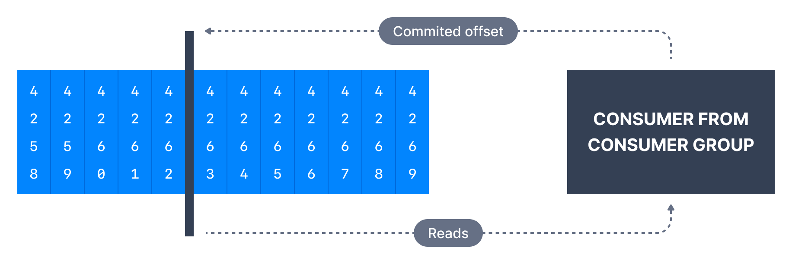

1. Introduction

-
Kafka消费者有个配置，用于在没以前提交的偏移量时如何操作，
若消费者应用出现bug且已down，则可能会发生这种情况； -
如Kafka的保留期为7天，而消费者停机超过7天，
则offset是"无效的invalid"，因它们将被删除； -
此类情况：消费者可选择从分区的开始或从分区的结束开始读取，
由consumer configuration的auto.offset.reset控制；
2. auto.offset.reset
| Entry | Memo |
|---|---|
latest |
默认，消费者将从分区的尾部(tail)读取消息 |
earliest |
从分区中最早的偏移量读取 |
none |
若没为消费者组找到以前的偏移量，则消费者抛出异常 |
3. offset.retention.minutes
-
Kafka消息偏移量的默认保留期，默认一周(7天)，这是broker级别设置，
是 __consumer_offsets 主题的偏移量保留期(以分种为单位)； -
若预计消费者停机时间超过1周(therefore lose their commit offset)，
或主题是低吞吐主题，且消费者未处理数据超过一周，则此设置特别有助于增加； -
此情况下：若消费者确实丢失其偏移量，"auto.reset.offset"设置将生效，
若想避免此情况，请将offset.retension.minutes增加到1月左右；
4. Replaying Consumer Data
-
可读取偏移量早于分区提交的数据，这可能是在意外情况下(unexpected circumstance)
从错误中恢复(recover from error)所必需的，要relay消费者组的数据，操作步骤： -
将所有消费者从特定组中take down；
-
使用kafka-consumer-groups命令来设置偏移量；
-
重启消费者；